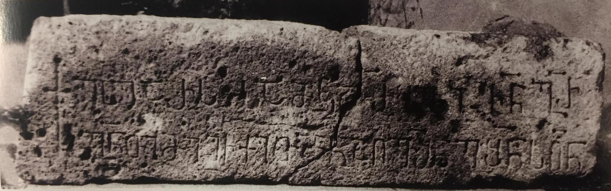

ვანის ქვაბების იჩქით გურგენისძის მამულის აშენების წარწერაVanis Kvabebi inscription of Ichkit Gurgenisdze about building his estate
ვანის ქვაბების იჩქით გურგენისძის მამულის აშენების წარწერა
Vanis Kvabebi inscription of Ichkit Gurgenisdze about building his estate
შინაარსი / Summary
მოსახსენებელი Memorial
ბიბლიოგრაფია Bibliography
კრიტიკული გამოცემა Interpretive Edition
"† ესე არს სამკდრბლი ჩნ გრ გნთი მე იჩქითმნ აღვშნე შნს ღნ"
† ესე არს სამკ(ჳ)დრ(ე)ბ(ე)ლი ჩ(უე)ნ გ(უ)რ -
გ(ე)ნ(ა)თი მეიჩქითმ(ა)ნ აღვ(ა)შ(ე)ნე შ(ეგვინდვ)ნ(ე)ს ღ(მერთმა)ნ
დიპლომატიური გამოცემა Diplomatic Edition
"† ႤႱႤ ႠႰႱ ႱႠႫႩႣႰႡႪႨ ႹႬ ႢႰ ႢႬႧႨ ႫႤ ႨႹႵႨႧႫႬ ႠႶႥႸႬႤ ႸႬႱ ႶႬ"
† ႤႱႤ ႠႰႱ ႱႠႫႩႣႰႡႪႨ ႹႬ ႢႰ
ႢႬႧႨ ႫႤႨႹႵႨႧႫႬ ႠႶႥႸႬႤ ႸႬႱ ႶႬ

ვანის ქვაბების იჩქით გურგენისძის მამულის აშენების წარწერა
{'default': 'ეს არის ჩვენი, გურგენისძეთა, სამკვიდრებელი. მე, იჩქითმა, აღვაშენე, ღმერთმა შეგვინდოს. This is the inheritance of our Gudgenisdze family. I, Ichkit built it, God forgive us.'}
{'default': 'ვალერი სილოგავას აზრით, წარწერის ტექსტში იჩქით გურგენისძე ერთგვარი ხაზგასმით აღნიშნავს: „ესე არს სამკჳდრებელი ჩუენიო“. როგორც ჩანს,\n ვანის ქვაბები ძველი დროიდანვე, ჯერ კიდევ თამარის მეფობამდე და შეიძლება თვით XII საუკუნემდე,\n გურგენისძეთა სამამულო სამფლობელო ყოფილა. XII საუკუნის ბოლოს ვარძიის გრანდიოზული სამონასტრო კომპლექსის მშენებლობის შემდეგ, როდესაც იგი და, ალბათ,\n მის გარშემო მიდამოები სამეფო სამფლობელოდ გადაიქცა, გურგენისძეთა სამფლობელოსაც სამეფო სამფლობელოდ გადაქცევის საფრთხე დაემუქრა და იჩქითი ორ სხვადასხვა\n წარწერაში (ერთი წუნდაში, მეორე ვანის ქვაბებში) საგანგებოდ აღნიშნავს, რომ ეს ადგილები გურგენისძეთა სამკვიდრებელია, ისინი მისი მამულია.\n 1204 წლიდან, როგორც ვანის ქვაბების ანტონ ჭყონდიდელის ზღუდის აშენების წარწერიდან ჩანს, აქ უკვე სამშენებლო სამუშაოებს მეფის მოხელე ჭყონდიდელ-\n მწიგნობართუხუცესი აწარმოებს, რაც იჩქითის მამულის სამეფო მფლობელობაში გადასვლის ნიშანი და საბუთია. ვალერი სილოგავა აქედან იმასაც ასკვნის, რომ\n იჩქით გურგენისძის წარწერის ზედა ქრონოლოგიური ზღვარი 1204 წელია. ხოლო ქვედა ზღვარი, ალბათ, თამარის მეფობის დასაწყისი (1184).'}
<div type="edition" xml:lang="ka" ana="mtavruli" xml:space="preserve">
<ab>
<lb n="1"/><w lemma="ქრისტე"><expan><abbr>ქ</abbr><ex>რისტ</ex><abbr>ე</abbr></expan></w>
<w lemma="განსუენება"><expan><abbr>გა</abbr><ex>ნ</ex><abbr>ო</abbr><ex>ჳ</ex><abbr>ს</abbr><ex>უ</ex><abbr>ენე</abbr></expan></w>
<w lemma="სულ">სოჳ<lb n="2" break="no"/>ლსა</w>
<name nymRef="ვაჩა">ვაჩაჲს<lb n="3" break="no"/>ასა</name>
<name nymRef="გურა"><expan><abbr>გო</abbr><ex>ჳ</ex><abbr>რაჲ<lb n="4" break="no"/>სასა</abbr></expan></name>
<name nymRef="მირა"><expan><abbr>მ</abbr><ex>ი</ex><abbr>რა</abbr><ex>ჲ</ex><abbr>ს</abbr><ex>ა</ex><abbr>ს</abbr><ex>ა</ex></expan></name>
</ab>
</div>